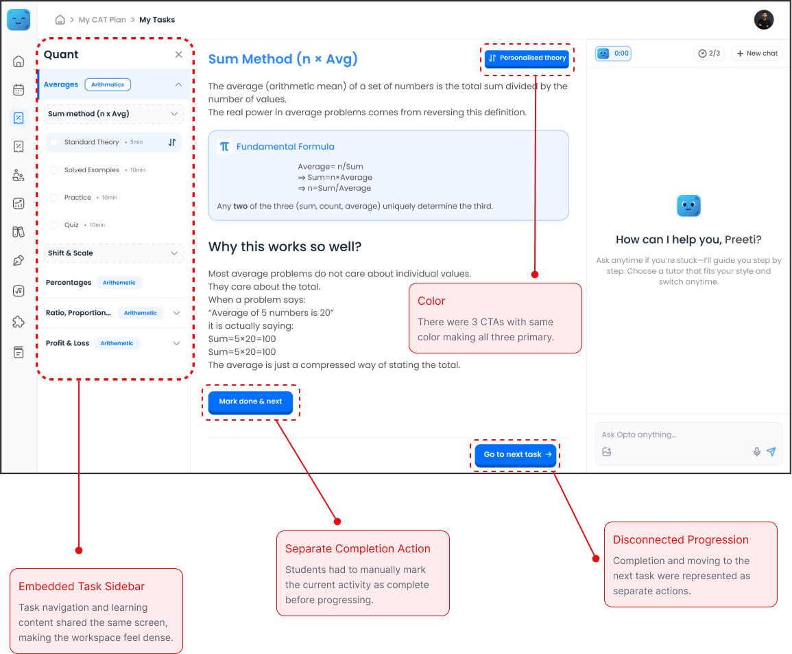
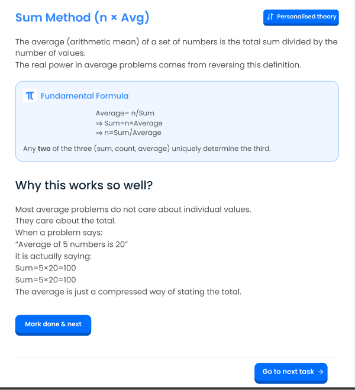
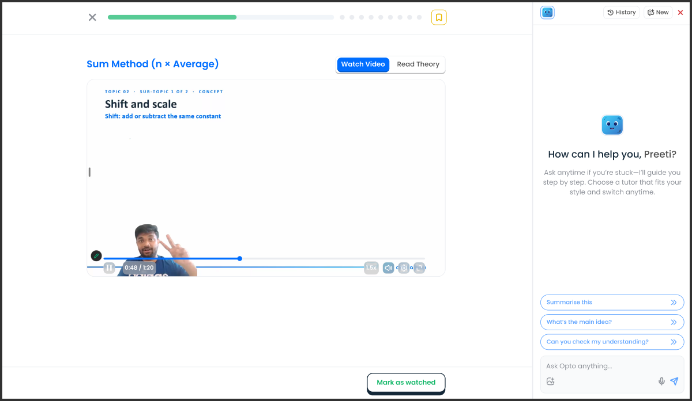
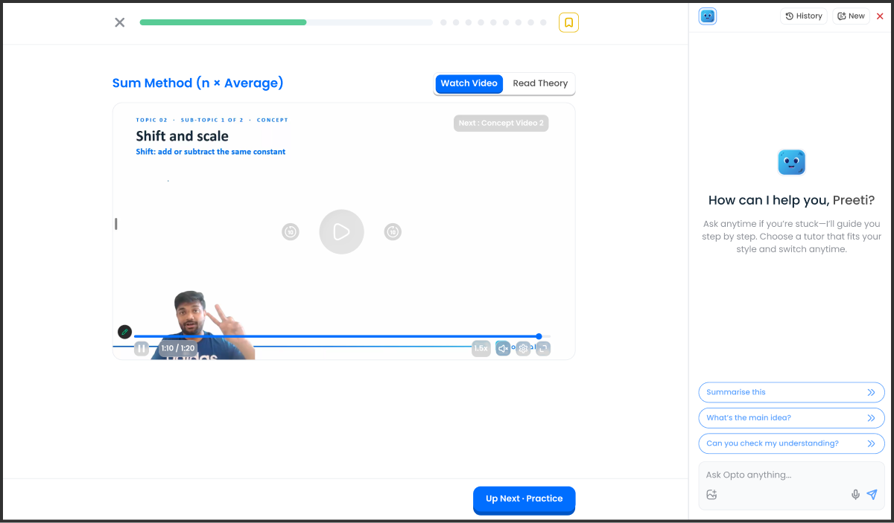
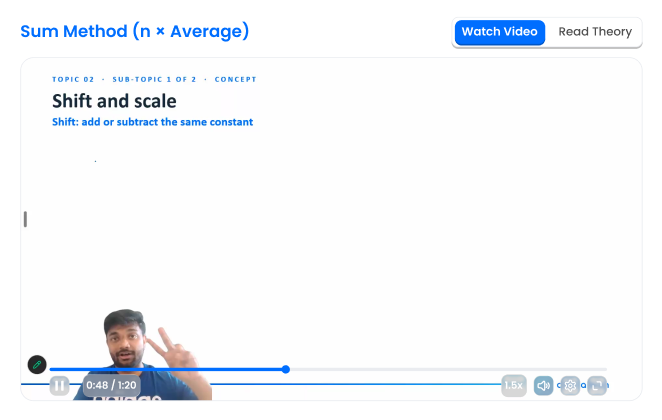
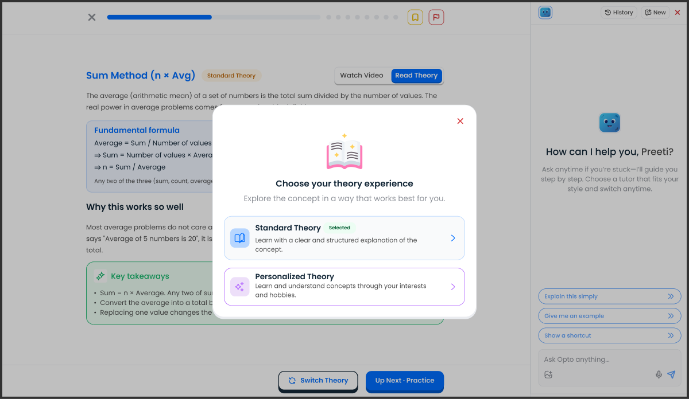

[01] Overview
Project overview
Optima Learn is an AI-powered platform that helps MBA aspirants prepare for the CAT. Students follow a study plan that breaks each subject (Quant, DILR and VARC) into chapters, and each chapter into short topics.
Every topic is a small study loop: learn the concept, see it applied in solved examples, practise on your own, then take a quiz before moving to the next topic. Opto, an AI tutor, sits beside the content to answer doubts along the way.
The plan
- Subject · Quant, DILR, VARC
- Chapter · e.g. Averages
- Topic · e.g. Sum Method
Inside a topic
- Concept
- Solved examples
- Practice
- Quiz
- Next topic
This redesign is about what happens inside that loop: how a student finishes one activity and gets to the next.
To understand how students moved through their lessons, I watched session replays of the old screen and reviewed analytics in PostHog. After designing the new flow, I interviewed students to check they could get through it on their own.
These activities helped inform our review of how students interacted with learning tasks and progressed through the platform. One of the areas we focused on was the task completion experience across learning activities.
In the existing structure, students had to manually mark a task as complete before moving to the next one. This created an additional interaction between completing an activity and progressing to the next part.
The redesign focused on simplifying this transition and making task completion feel more naturally connected to the learning journey.
[02] Research
What the old flow was doing
I watched 20+ session replays of the old learning screen to see how students actually moved through a topic, and checked the numbers in PostHog.
[01] From the replays
Students skipped Mark done
Most students clicked “Go to next task” and skipped the Mark done button, so their progress wasn’t tracked even when they had finished.
[02] From the replays
Practice lived somewhere else
The old design sent students to a different tab for practice, which broke the study loop between learning a concept and practising it.
[03] From PostHog
The numbers agreed
In the 41 days before launch, practice was started on only 126 topics, by 42 learners, and only 33% of it was completed.
Study loops I looked at
- Coursera
- RevisionDojo
- Khan Academy
What I took away
Keep learning and practice in one linear sequence, so finishing one step leads straight into the next. I used Claude to speed up the scan, then went through each study loop myself.
[03] Design challenge
How might we simplify task completion so students can finish an activity and move forward without an unnecessary additional action?
[04] UX audit
Identifying friction points
Before redesigning, I broke down the existing learning screen to see where navigation and progression were creating unnecessary interactions.

[05] Redesign direction
Redesign direction
The redesign focused on removing unnecessary steps while giving each part of the learning experience a clearer purpose.
[01]
Separate task navigation from learning
Move the task structure into its own screen, giving learning more focused space.
[02]
Make progression part of completion
Connect completing an activity with moving to what comes next.
[03]
Bring learning formats together
A more connected experience for video and written theory.
[04]
Support different ways of learning
Introduce Standard Theory and explore Personalised Theory without a separate flow.
[05]
Use different buttons
Use different buttons for different actions, using primary CTA in different sizes was not making the primary action clear.
[07] Completion
Making completion part of progression
The next problem was more fundamental: completing a task and moving forward were two separate actions. The primary CTA now handles completion and progression together.
Previously
- Complete activity
- Mark as done
- Go to next task
Redesigned
- Complete activity
- Next activity
The button
- Mark as watched
- Saving
- Up Next · Practice
Before

Unclear action hierarchy: Three prominent CTAs competed for attention, making the intended next step less obvious.
Completion friction: Users navigated to the next task without marking the current one as complete, leaving their progress inaccurately tracked despite finishing the content.
After


One CTA, contextual progression
Video
Up Next · Solved example 1Practice
Up Next · PracticeQuiz
Up Next · Quiz[08] Video & theory
Bringing video & theory together
As video learning was introduced alongside written theory, I designed them as two ways of engaging with the same concept rather than separate destinations. Students can switch between watching and reading without leaving the learning experience.
Before
Theory only: the old screen (shown in [04] UX audit) offered only theory for each chapter and concept. The updated flow introduced concept videos alongside theory, giving learners the flexibility to choose their preferred learning format while retaining access to the original theory content.
After

[09] Personalised theory
Exploring personalised theory
Alongside Standard Theory, we explored Personalised Theory, where explanations use examples related to a student’s interests. I kept both within the same learning structure so personalisation wouldn’t introduce an entirely new way of learning.

Standard Theory
A clear, structured explanation of the concept.
Personalised Theory
Examples tailored around the student’s interests.
Learning format and theory mode became separate decisions
→ How do I want to learn?
→ How do I want the concept explained?
[10] Learning states
Treating the experience as a system
Once the core interaction was defined, I mapped every state the learning experience needed to support, rather than designing each screen independently.
Watch
- Video playing
- Video completed
- Next video
Read
- Standard Theory
- Personalised Theory
- Switching modes
Practice
- Current question
- Complete
- Next question
Progression
- Current activity
- Completed
- Next activity
[11] New learning flow
The new learning flow
- ◈Choose a task
- ◈Learn: watch or read
- ◈Complete the activity
- ◈Move straight to what’s next
- ◈Keep learning
[12] Validation
Testing it with students
Once the new screens were designed, I interviewed 2 students and gave each of them the same task.
The task
- Complete one topic
- Do its practice
- Start the quiz
What happened
They found it easy to complete. With every step arranged in one linear sequence, there was always one obvious next thing to do.
[13] Results
What changed after launch
Measured in PostHog over the first 41 days after launch, compared with the 41 days before. Results 02–05 cover the new design only.
[01] Completion rate, old → new
ConceptRead the theory or watched the video
PracticeAttempted every question
Practice was started on 7× more topics (126 → 929), by 115 learners instead of 42. Counted per topic a student opened; topics they had already finished are left out.
Old design New design
[02] Drop-off between activities
2 in 3
students who finish a concept go straight on to practice, and 87% who finish practice open the quiz.
[03] The Up Next button
66%
of learners on the learn screens used it. It brings students to 3 in 4 practice starts and 9 in 10 quiz starts.
[04] Time to the next activity
1s
median from concept to practice (96% start within a minute), and 28 seconds from practice to quiz.
[05] Watch vs read
4×
On topics with both options, students read the theory about 4× more often than they watch the video.
Still to measure: adoption of Personalised Theory.
[14] Reflection
What this project changed for me
This project changed how I approach learning flows. Instead of asking “What screen should come next?”, I started thinking about what the student is trying to accomplish at each point in the journey.
The interface should help students progress through learning, rather than make them manage the process.
[Next] Case study · on Medium
Revamping PicknPack for a smoother shopping experience ↗